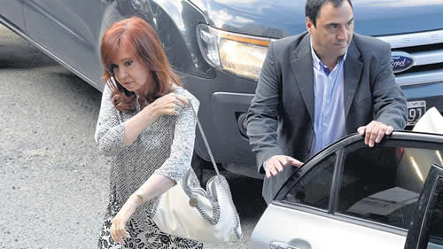

Real Chubut - Agencia de Noticias


"No tienen una sola prueba, porque no existe"

La ex presidenta fue citada en el marco de la causa de las fotocopias de los cuadernos. Desestimó las denuncias, consideró que ya había sido procesada y denunció que "arman causas para destruir opositores".
La mayoría de las ocho indagatorias a las que tuvo que presentarse como sospechosa Cristina Fernández de Kirchner son derivaciones de la causa de las fotocopias de los cuadernos, cuyo origen –de por sí– la ex presidenta ya denunció por considerar viciado. En ese expediente, CFK ya está procesada por asociación ilícita y tiene pedido de desafuero. El efecto de multiplicar las acusaciones estaría orientado a sumar presión, con más procesamientos, para hacer tambalear sus fueros, algo que en lo que el Senado hasta ahora no estuvo dispuesto a avanzar, mientras crecen las especulaciones por su candidatura presidencial. Uno de los expedientes más insólitos en los que quedó implicada es el que alude a supuestos sobreprecios en la importación de Gas Natural Licuado (GNL), donde se la imputa por los supuestos aportes realizados en dos declaraciones del falso abogado Marcelo D'Alessio, que ayer mismo fue procesado con prisión preventiva por extorsión. El paso de la ex mandataria por tribunales estuvo atravesado por una combinación de la tensión que se reaviva cada vez que entra a Comodoro Py como imputada, y lo que pasa después de que declara: la buscan empleados, ordenanzas, funcionarios, abogados y curiosos para saludarla y sacarse selfies con ella.
La ex presidenta inauguró el día con varios mensajes por Twitter donde recordaba que el juez Claudio Bonadío eligió el día en que Néstor Kirchner hubiera cumplido años para citarla a ocho indagatorias y responsabilizarla por una supuesta asociación ilícita que ya es investigada en otras varias causas. Al juez se lo cruzó apenas un instante, donde no hubo más que un "buenos días". Había llegado cerca de las 9 de la mañana y tuvo que presentarse en las dos secretarías (22 y 21) del juzgado donde están repartidas las causas. Además de su abogado, Alberto Beraldi, la acompañó, como otras veces, Eduardo Valdés, ex embajador en el Vaticano y hoy parlamentario del Mercosur.
En un momento de espera escuchaban desde el pasillo que alguien se quejaba con vehemencia, dentro de una de las oficinas: "La corrupción mata ¡La de este edificio!". Era el abogado José Manuel Ubeira, que se estaba notificando de que el juez rechazaba la recusación que había planteado en contra del fiscal de la causa de la fotocopia de los cuadernos, Carlos Stornelli, cuyo apartamiento pidió cuando surgieron elementos en la famosa causa que empezó a tramitar en Dolores con la denuncia de extorsión del empresario Pedro Etchebest, de que habrían intentado hacerle vía Marcelo D'Alessio una cámara oculta. Ubeira defiende a Oscar Thomas, que sigue preso por los cuadernos, e interviene en causas claves, como la del encubrimiento del atentado a la AMIA. Cuando lo vio salir, la ex presidenta se le acercó, y le dijo que había reconocido la voz, de haberlo escuchado en entrevistas de radio y televisión. Se saludaron con simpatía y se sacaron una selfie, según contaron testigos a este diario.
La ex presidenta negó todos los cargos y decidió no contestar preguntas pero tuvo que hacer todo el trámite formal propio de las indagatorias. De todos modos, entregó un escrito común, donde muestra como epicentro de toda la cuestión a la causa de las fotocopias de los cuadernos. "Sacaron fotocopias de la causa de las fotocopias, recibieron declaración a curiosos personajes que se presentan "espontáneamente" en la fiscalía de Stornelli, solicitaron algunos papeles al Poder Ejecutivo de la nación y con todo ello (es decir, nada) me convocaron a prestar declaración indagatoria en ocho causas distintas, sin explicar tan siquiera en una sola línea el motivo de estas citaciones", dice un tramo. "Debo reconocer que en términos cinematográficos, esta película merecería recibir un Oscar por su originalidad", ironizó.
Luego enumeró las causas por las que fue citada a indagatoria, aunque no le habían notificado las razones, y señaló las curiosidades que las rodean:
- Una es la propia causa de los cuadernos, donde ya fue indagada dos veces, procesada con prisión preventiva y pedido de desafuero, más un embargo millonario. Todo eso a pesar de que no hay una prueba directa que la involucre en la trama de coimas y cartelización de la obra pública.
- La causa donde se investigan supuestos sobreprecios en la importación de Gas Natural Liucado (GNL) es aquella donde en 2017 fueron detenidos Julio De Vido y Roberto Baratta, y donde se aplicó por primera vez la llamada "doctrina Irurzun" para meter ex funcionarios presos. Buena parte se sostenía en una pericia que resultó trucha, a punto tal que el perito David Cohen fue denunciado e investigado, y una pericia oficial incluso determinó que estuvo mal hecha. Lo que CFK recuerda es que la propia Cámara Federal terminó revocando los procesamientos porque todo se apoyaba en un estudio con "contradicciones, olvidos, confusiones" y pasajes copiados de documentos colgados en Internet ¿Cómo llega la citación a la ex presidenta? Suena insólito pero es real: el 5 de noviembre del año pasado se presentó "espontáneamente" en la fiscalía de Stornelli el falso abogado Marcelo D'Alessio a declarar y a salvar el abismo en el que había caído el expediente. Presentó documentos que supuestamente muestran sobreprecios y le atribuyó a la ex mandataria un supuesto interés en el tema. En una segunda declaración, el 12 de noviembre, aportó material con el que dijo haber colaborado con el libro del periodista Daniel Santoro, El Mecanismo.
La ex presidenta destacó que el juez la citó a indagatoria en base a los dichos de Marcelo D'Alessio y consideró que "utiliza la declaración de una persona que fue filmado, grabado, fotografiado, y "whatsappeando con Stornelli, pidiendo coimas en la causa de las fotocopias de los cuadernos. Un escándalo nunca visto".
- Otra de las indagatorias es por una nota del periodista Diego Cabot donde "se afirmaba que varias empresas de colectivos habrían recibido subsidios millonarios de manera injustificada" porque supuestamente consignaban recorridos de mayor kilometraje al real. Acá la Cámara también había revocado otros procesamientos. Se la convoca como sospechosa por supuestas menciones en la causa de los cuadernos. "No tengo relación alguna con esas irregularidades", dijo CFK.
- En otro desprendimiento de la causa de los cuadernos la vinculan con supuestos pagos de empresarios ferroviarios para mantener las concesiones y obtener subsidios estatales. CFK insiste: "vuelvo a ser indagada por la misma supuesta asociación ilícita por la que ya estoy procesada". "Vuelvo a ser récord en la violación de la garantía del ne bis in idem", que implica que no se puede juzgar dos veces a alguien por lo mismo.
- Otra citación es por un desprendimiento de la causa central donde se investiga a 101 empresarios por supuestos pagos ilegales por obra pública civil a partir de las declaraciones de arrepentidos.
- Una más es por supuestos pagos ilegales a concesionarios viales, también a partir de declaraciones de arrepentíos.
- Un expediente se originó cuando en uno de los allanamientos a propiedades de la ex presidenta se hallaron documentos como una carta entre O'Higgins y San Martín, un prontuario de Hipólito Yirigoyen, un informe sobre Petrobrás, otro sobre Alberto Nisman, que según el juez son documentos que "no pueden estar en manos de particulares".
- La última es una acusación por haber usado supuestamente la flota aérea presidencial para enviar diarios y una serie de muebles a Santa Cruz.
Al final CFK dice que: "se han armado un montón de causas para citarme y luego procesarme generando noticias de alto impacto mediático; en ningún caso existen pruebas (…); en la mayoría de los casos vuelvo a ser citada como supuesta jefa de una misma asociación ilícita (…) no obstante todas las arbitrariedades perpetradas por el juez y el fiscal no consiguieron una sola prueba, porque no existe, que demuestre que recibí coimas por parte de contratistas del Estado o que cometí delitos".
Fuente: Pagina 12